Preparing and Identifying of Chloropleth Map
1. Loading the GIS Data
Before you can start to perform any analysis, you need to load all the appropriate GIS data into QGIS.
Start a new project on QGIS
From the Browser pane, click on all the layers you downloaded and plan to use.
1.1 Clipping All Appropriate Layers From Libya To Derna City
· This can be done using the clip function in QGIS.
· From the menu bar, select Vector > Geoprocessing Tools > Clip.
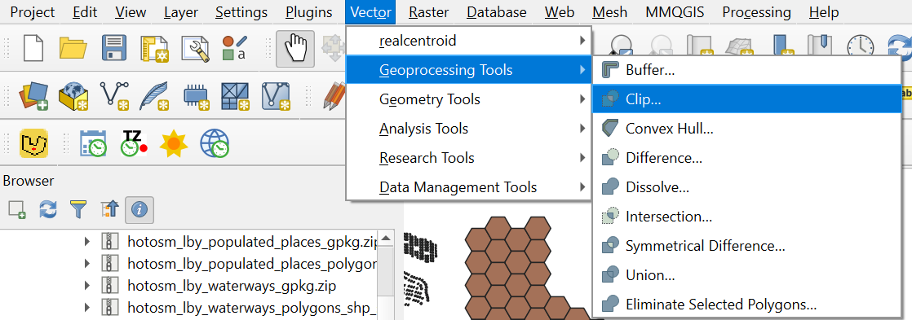
- Put the input layer as the layer you wish to clip and the Overlay layer as Derna_city_250m_hexagon.
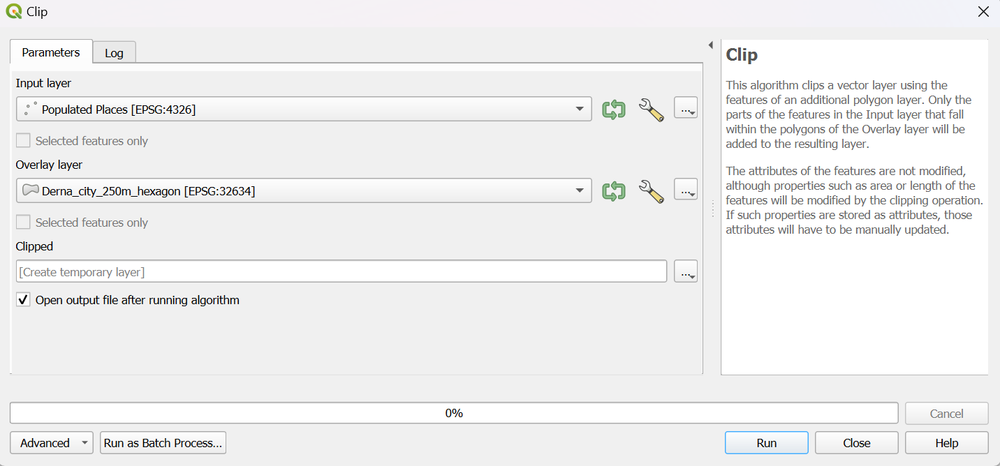
- Click the wrench icon beside the input and overlay layer and switch the Invalid Feature Filtering to Do Not Filter from the drop down box.
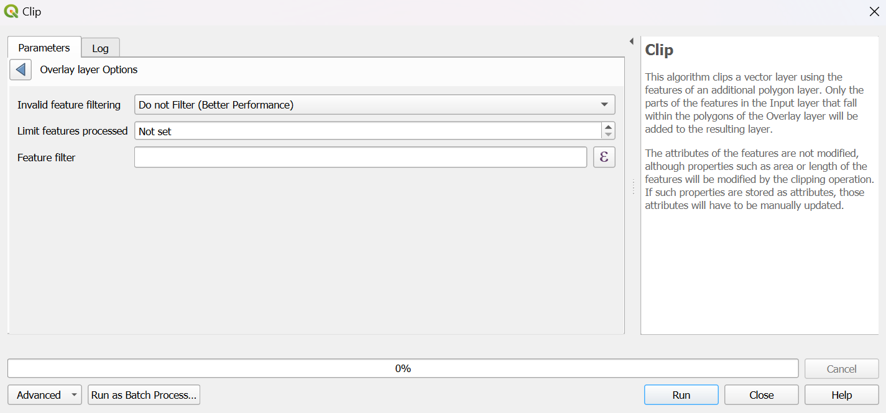
- Click run and close the dialogue once it’s done.
A temporary clipped layer will be created on your layer panel.
Now we are going to save the layers in a GeoPackage database.
- Create a new sub-folder called GeoPackage and use the export feature by right clicking the clipped layers and save features as geopackage.
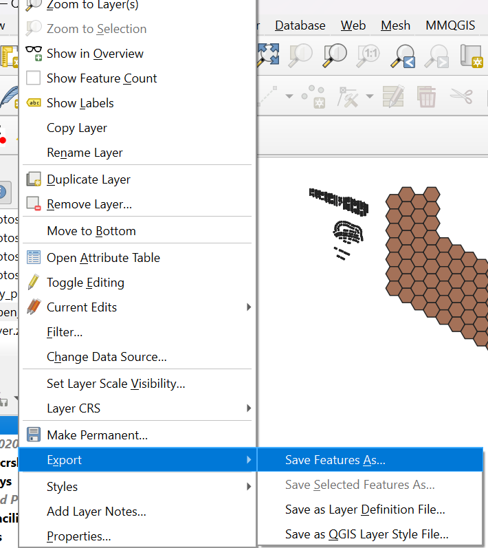
- The dialogue box below will appear.
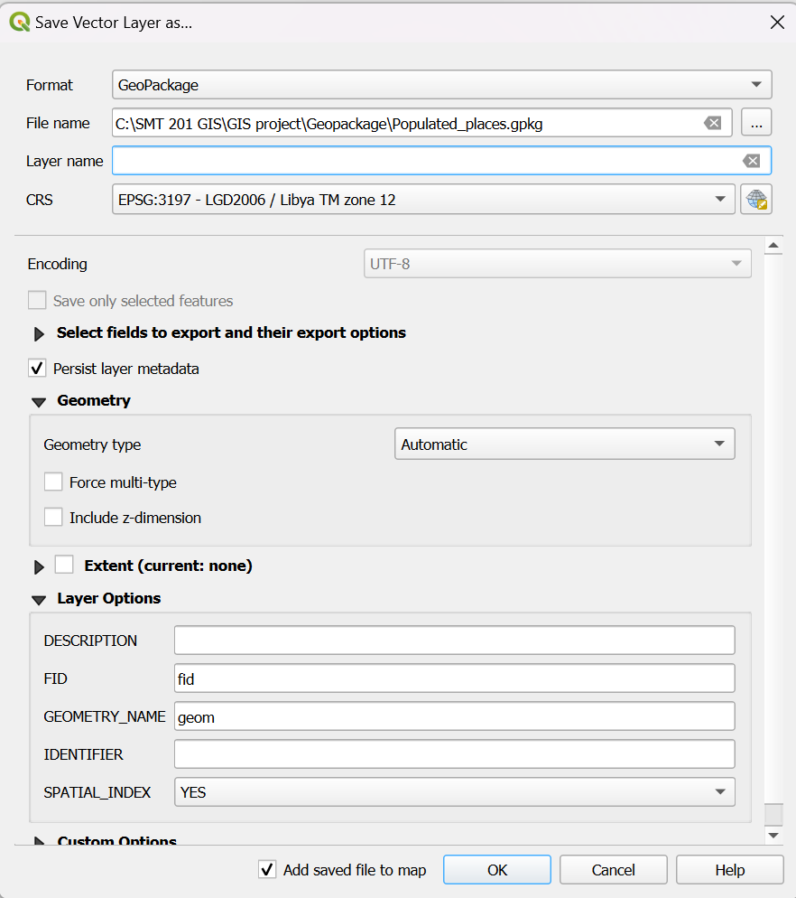
Change the CRS projection to EPSG: 32634 and name your layers.
You can do so by clicking the earth icon next to CRS in the dialogue box and typing in Libya in the filter box.
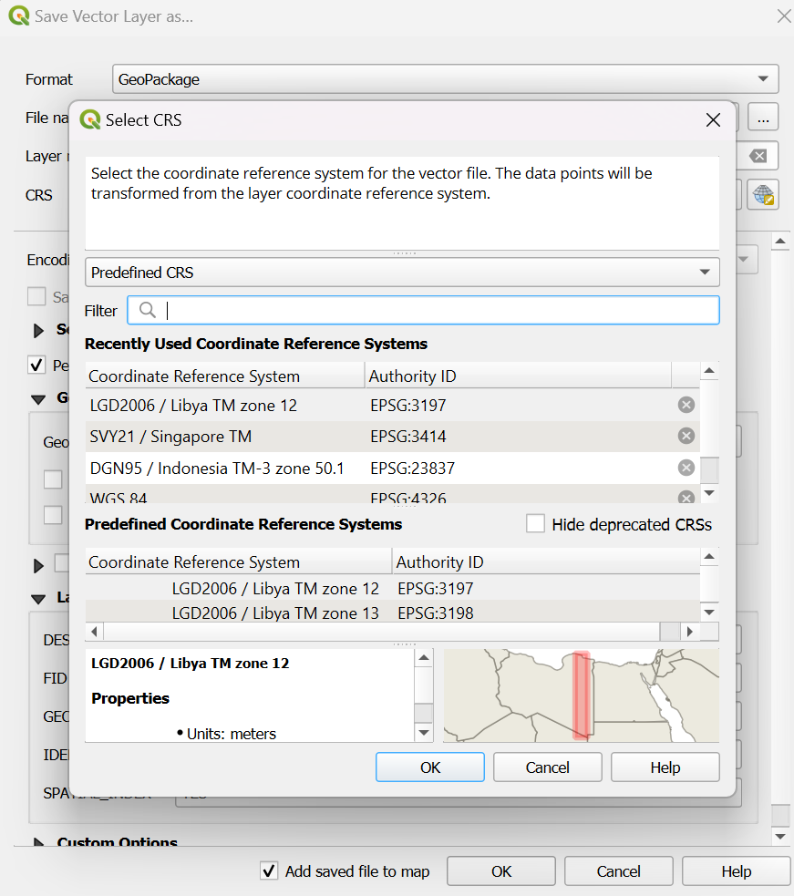
Click OK once done. The layer is now saved.
Remove the temporary clipped layer
Repeat for the remaining feature layers.
- Education, residential, evacuation centres, medical facilities, road network, waterway
We will now perform the same action for the raster layers of Derna city's land elevation model.
- From the menu bar, go to Raster > Extraction > Clip Raster by Layer.
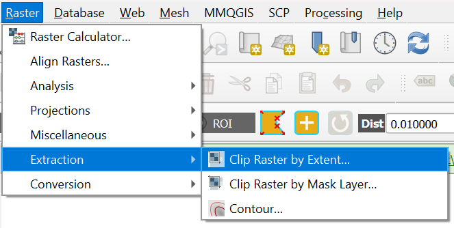
In the dialogue box that pops up, select the DEM layer lyb_strm_250m
For Clipping extent, press the icon on the right and choose Calculate from layer > Derna_city_250m_hexagon.
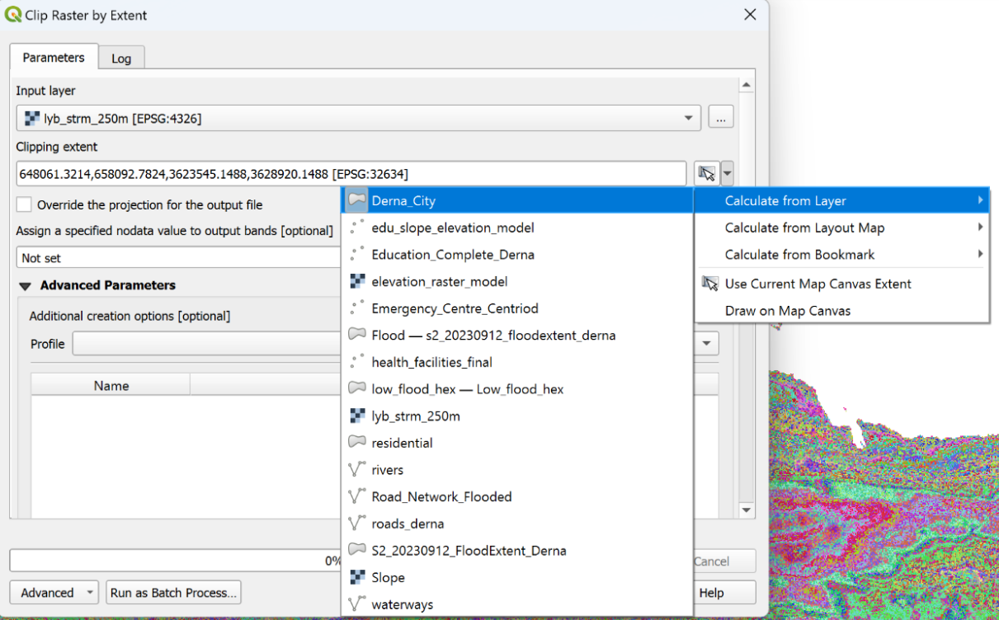
Click Run.
A temporary Clipped (raster) layer will be created.
Export and save the layer as a Geopackage. Remember to change the CRS projection. Rename the layer to 'elevation model'
Before you move on to the next section, remember to remove the raw and temporary layers.
1.2 Extracting Specific Features From Each Layer
Open the attribute table of the layer health_facilities by right clicking and selecting Open Attribute Table.
From the menu bar of the attribute table, click on Select Features using an Expression icon.
Inside the expression box, select fields and values > amenity. Type in '=' and press All Unique in the value box on the right. Then double click on 'hospital', 'doctor', 'clinic' as these constitute the medical centres that we are trying to study.
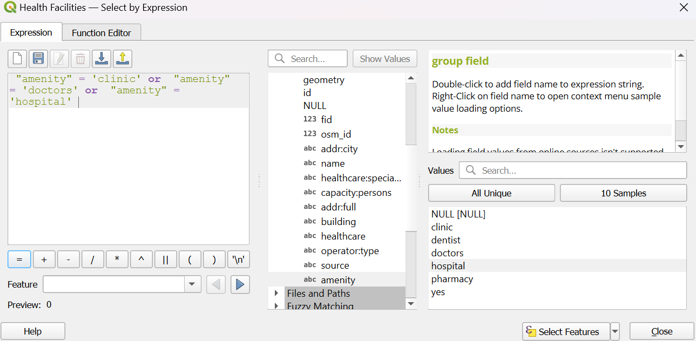
Click on the Select Features button.
Now, we can save the features by Export > Save Selected Features As and create a new Geopackage layer. Remember to change all CRS projection to EPSG: 32634.
Now, we can do the same for all the remaining layers. Eg. for the Hotosm_lby_buildings layer, we will only extract residential areas, as for the OSM buildings layer, we will extract emergency centres and medical facilities.
You can refer to the screenshots below on what to extract.
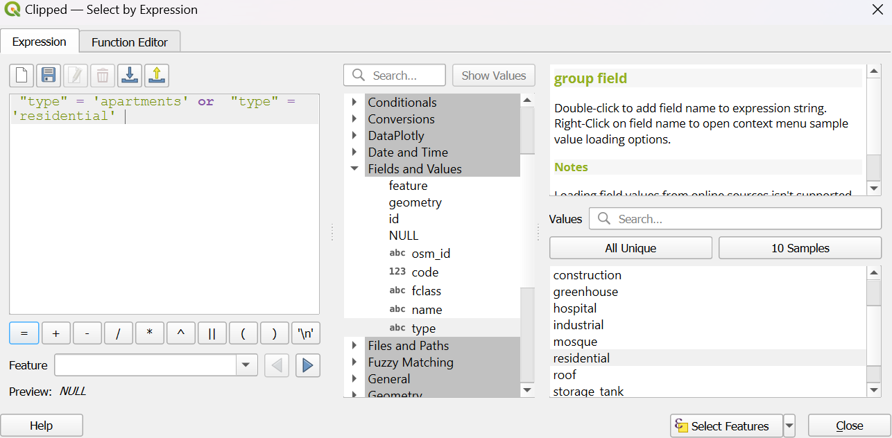
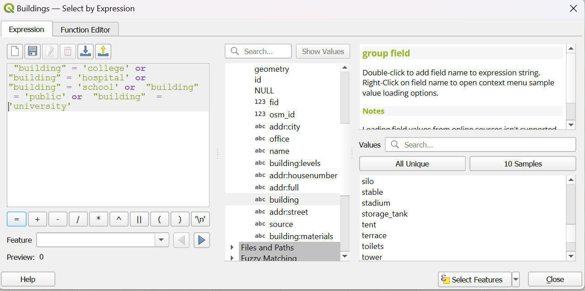
After completing, we will save all the layers in Geopackage format.
1.3 Merging Both Emergency and Medical Facilities, and Education Layer
Firstly, we have to merge all the emergency centres and medical facilities layers obtained from several raw layers, mainly the OSM and HotOSM layers. Secondly, we have to merge the OSM and HotOSM layers of the Education layer together.
- From the menu bar, select Vector > Data Management Tools > Merge Vector Layers.
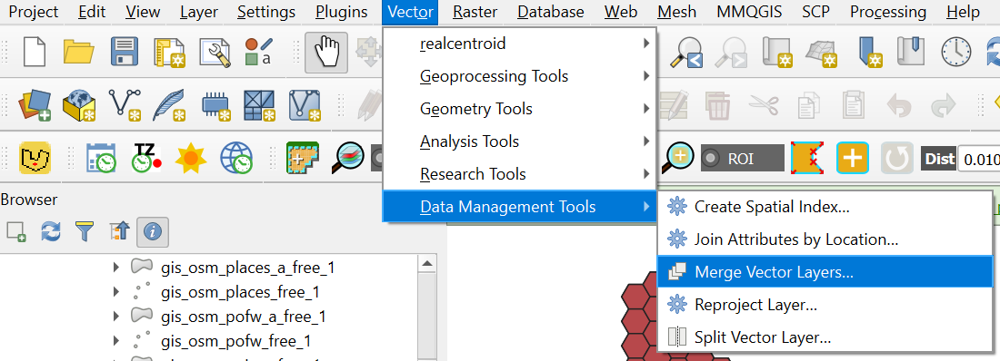
For input layers, check all the emergency centres and medical facilities.
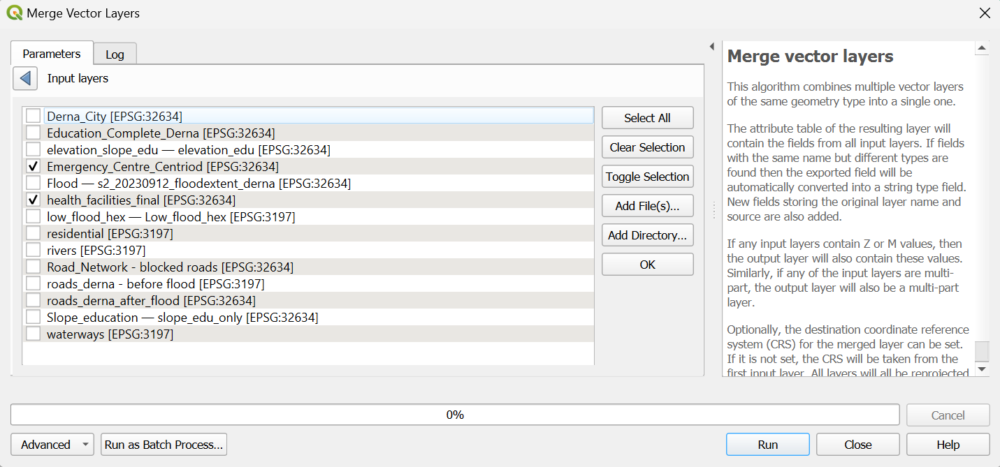
Click OK.
Change the CRS projection to EPSG: 32634.
Click Run like the screenshot below.
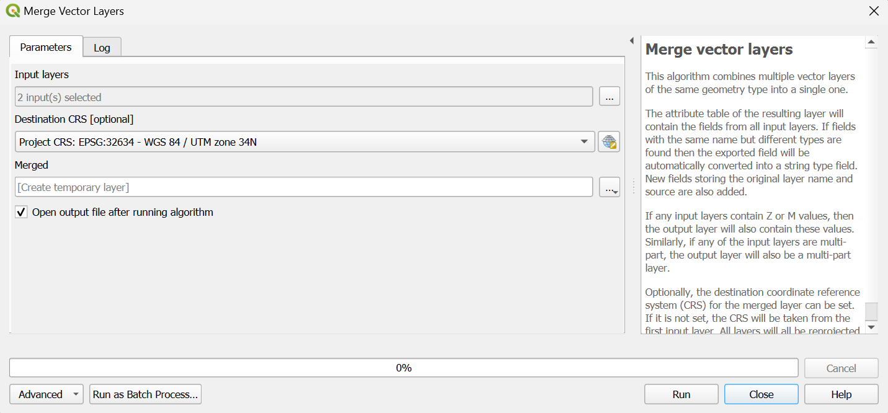
A new temporary merged layer is created and it needs to be saved into a GeoPackage.
- We can save the features by Export > Save Selected Features As and create a new Geopackage layer. Remember to change all CRS projection to EPSG: 32634. Save it into a new file "existing_shelters_before_flood"
Repeat the steps to merge the education layer on its own. GeoPackage the layer and name it 'education_
1.4 Creating Centroid Layer of Existing Shelters Layer
- From the menu bar, go to Vector -> Geometry tools -> Centroids
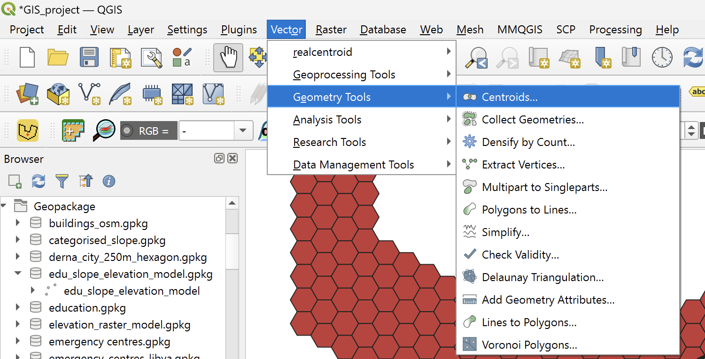
- Select emergency_healthcare_merged in the pop-up dialogue and click run.
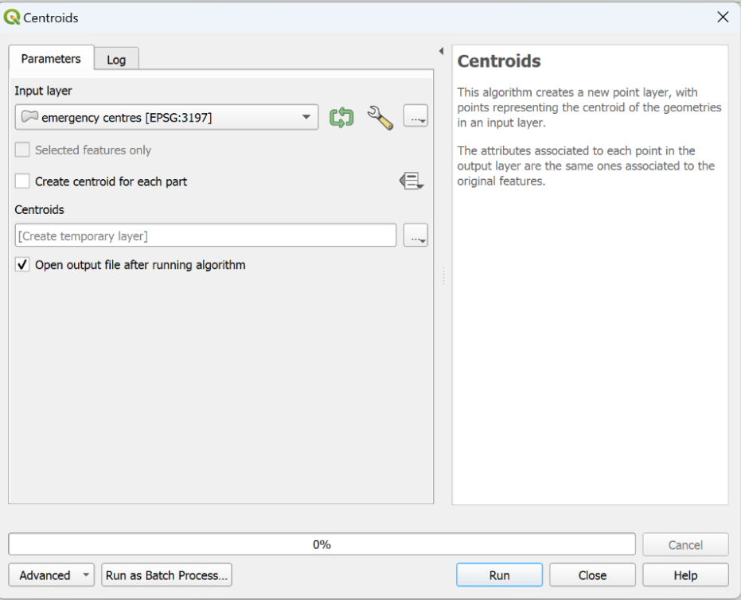
A new temporary Centroid layer will be created in the layer panel.
In order to save the new layer, we need to GeoPackage the layer
We can save the features by Export > Save Selected Features As and create a new Geopackage layer. Remember to change the CRS projection to EPSG: 32634. For the file save it as 'emergency_healthcare_centroid'
1.5 Creating Slope Layer
We will compute a slope layer from elevation model layer layer by using the Slope operation.
- From the menu bar, select Raster Analysis Slope.
Slope dialog window appears.
- For Input layer, select elevation model layer from the drop-down list.
Keep the rest of the setting as default.
- Click on the Run button.
When the computation is completed, a temporary layer called Slope will be added. Click on Close button to close Slope function dialog window.
In order to save the newly computed Slope layer, we need to GeoPackage it.
Right click on the Slope layer click on Export select Save As…
· Make sure that the format is Geopackage and select the Browse button at the File Name
· When inside the Geopackage file, create a new 'Slope' file and click on the save button
· At the Layer input, indicate "Slope"
· At the CRS, click on the drop-down button and click on EPSG: 32634
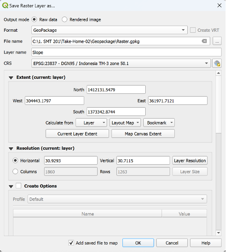
Remove the temporary Slope layer by doing the steps mentioned above.
1.6 Adding Elevation and Slope level to Education Layer
Firstly, we need to download a plugin. At the menu bar, select Plugins > Manage and Install Plugins…
At the search tab, search for 'Point sampling tool' and click on it
At the bottom right, click on Install Plugin
After the plugin is installed, close the dialog window
Ensure that only the education layer and slope raster layer are selected in the layers panel.
Select Plugins > Analyses > Point Sampling Tool
In the 'Layers with fields/bands to get values from:', scroll down till you see the slope raster layer
Click on it
At the 'Output point vector layer', select on the Browse button
Head to the GeoPackage folder and name the new file as 'Slope_education''
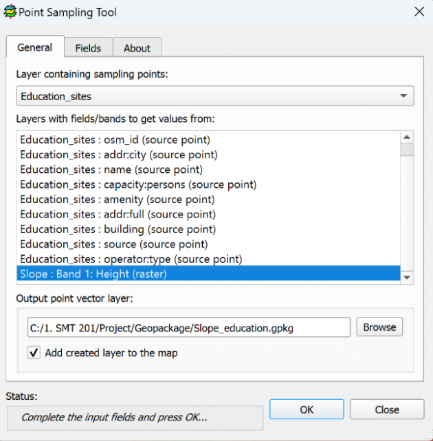
- A new point layer will be created
Repeat the same process to integrate the slope degree into the point layer. Instead of using the education layer and elevation raster layer, use the Slope_education and elevation level layer. Name the new layer 'edu_slope_elevation_model'. After this, remove the Slope_education layer.
1.7 Creating Slope and Elevation Category Field
To make it easier to visualise which education location is most optimal, we will be creating a 'Low', 'Mid' and 'High' category for both the slope and elevation category.
For the slope category:
- Right click on the 'edu_slope_elevation_model' layer > select Open Attribute Table > Open field calculator
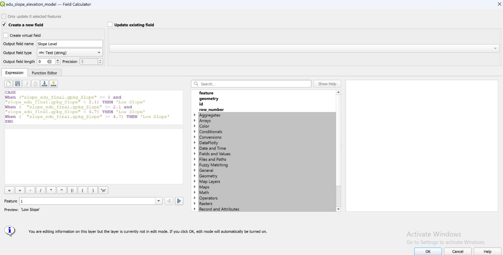
At the Output field name, indicate: 'Slope Level'
At the Output field type, click on the drop down icon and indicate Text as the data type
Copy and paste the following code into the expression input:
CASE When (“slope_edu_final.gpkg_Slope” >= 0 and “slope_edu_final.gpkg_Slope” < 2.1) THEN ‘Low Slope’ When ( “slope_edu_final.gpkg_Slope” >= 2.1 and “slope_edu_final.gpkg_Slope” < 4.7) THEN ‘Low Slope’ When ( “slope_edu_final.gpkg_Slope” >= 4.7) THEN ’Low Slope' END |
- Click on the OK button and a new field will be created.
For the elevation category:
- Repeat the same steps as the slope category
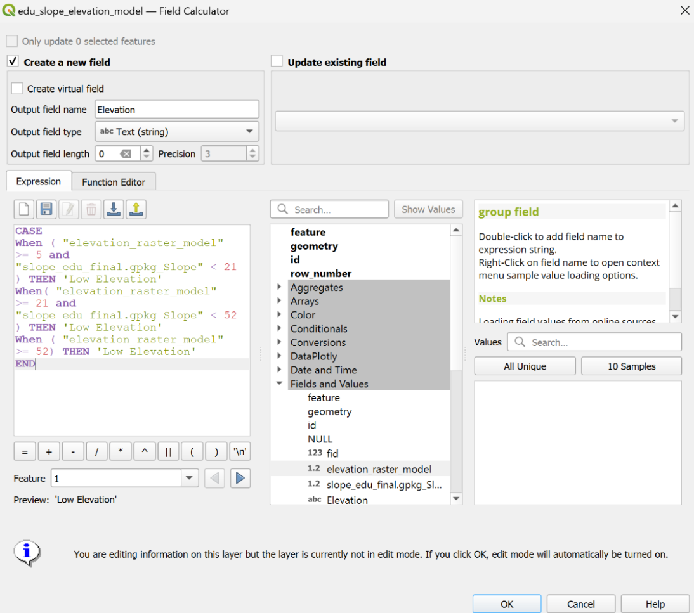
Change the Output field name to 'Elevation'
Copy and paste the following code into the expression input:
CASE When ( “elevation_raster_model” >= 5 and “elevation_raster_model”< 21) THEN ‘Low Elevation’ When( “elevation_raster_model” >= 21 and “elevation_raster_model” < 52) THEN ‘Low Elevation’ When ( “elevation_raster_model” >= 52) THEN ‘Low Elevation’ END |
After creating both of the categories, we need to create a new category with both the elevation and slope category. This allows us to categorise the education centres according to which both slope and elevation at the same time.
- Repeat the same steps as the slope category
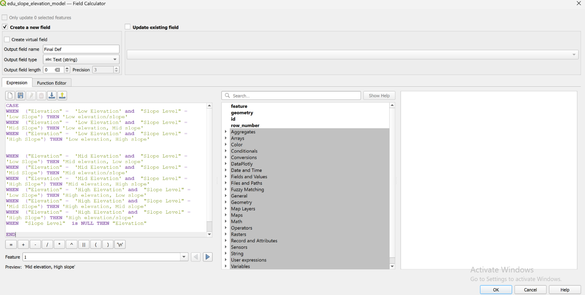
Change the Output field name to 'Final Def'
Copy and paste the following code into the expression input:
CASE WHEN (“Elevation” = ‘Low Elevation’ and “Slope Level” = ‘Low Slope’) THEN ‘Low elevation/slope’ WHEN (“Elevation” = ‘Low Elevation’ and “Slope Level” = ‘Mid Slope’) THEN ‘Low elevation, Mid slope’ WHEN (“Elevation” = ‘Low Elevation’ and “Slope Level” = ‘High Slope’) THEN ‘Low elevation, High slope’ WHEN (“Elevation” = ‘Mid Elevation’ and “Slope Level” = ‘Low Slope’) THEN ‘Mid elevation, Low slope’ WHEN (“Elevation” = ‘Mid Elevation’ and “Slope Level” = ‘Mid Slope’) THEN ‘Mid elevation/slope’ WHEN (“Elevation” = ‘Mid Elevation’ and “Slope Level” = ‘High Slope’) THEN ‘Mid elevation, High slope’ WHEN (“Elevation” = ‘High Elevation’ and “Slope Level” = ‘Low Slope’) THEN ‘High elevation, Low slope’ WHEN (“Elevation” = ‘High Elevation’ and “Slope Level” = ‘Mid Slope’) THEN ‘High elevation, Mid slope’ WHEN (“Elevation” = ‘High Elevation’ and “Slope Level” = ‘High Slope’) THEN ‘High elevation/slope’ WHEN "Slope Level" IS NULL THEN "Elevation" END |
After creating the 3 new categories, we need to save these changes. On the top left of Attribute table window, click on the pencil icon and confirm the saved changes made.
1.8 Creating A Derna City Layer That Excludes The Flooded Area
We need to create a new layer that excludes areas that are flooded. To do this we need both the flooded layer and derna city layer.
Select Vector > Geoprocessing Tools > Symmetrical Differences…
For the input layer: Flood - s2_20230912_floodextent_derna
Overlay layer: Derna_City
For both the layer, click on the Advanced options
At the Invalid feature filtering, click on the drop down and select 'Do not Filter (Better Performance', and click on the back button on the top left
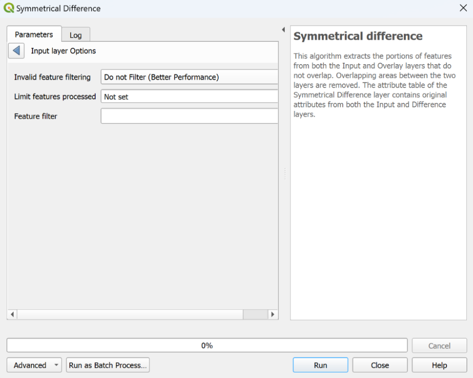
- Here is how the dialog window should look like
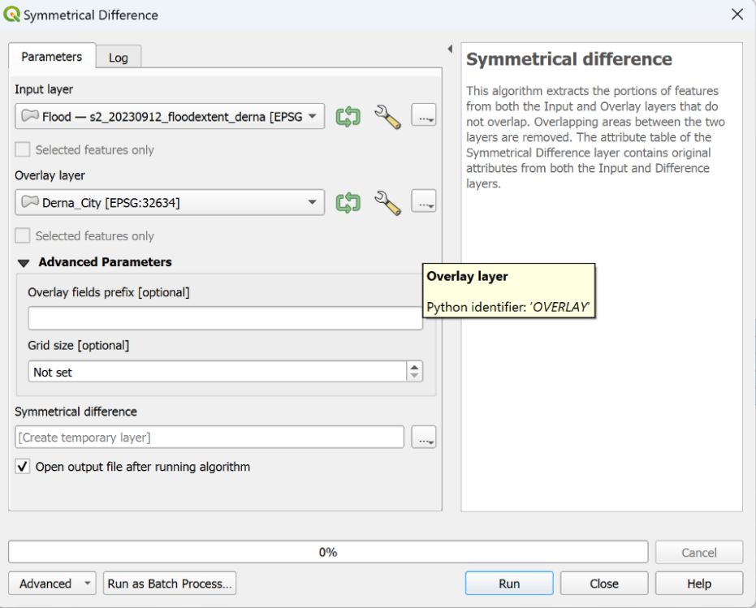
Click on the run button
A new layer 'Symmetrical difference' will be created
Geopackage this layer to save it. Remember to change the CRS projection to EPSG: 32634. For the file save it as 'low_flood_hex'